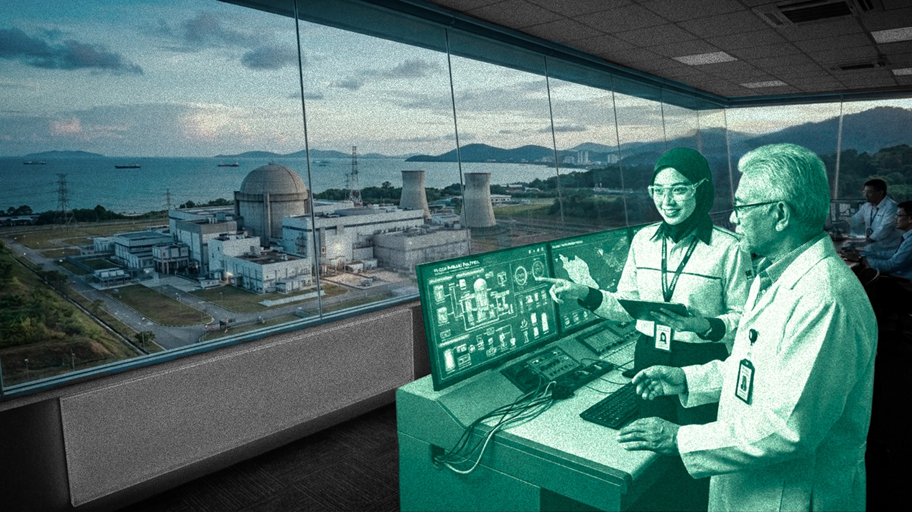
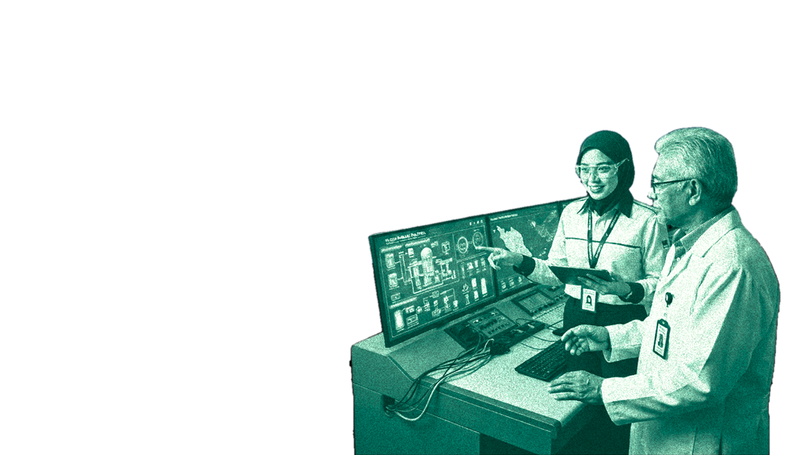
Pagi-pagi lagi, Sara dah capai telefon. Cari bahan untuk kelas. Buat sedikit penyelidikan. Semak aplikasi perbankan. Pesan makanan. Cari jalan ke kampus.
Benda biasa yang kita buat setiap hari. Tapi pernah tak kita berhenti sekejap dan fikir siapa sebenarnya yang membina semua teknologi yang kita gunakan?
Sara bukan pelajar sains atau teknologi. Tapi macam kebanyakan anak muda hari ini, hidupnya bergantung pada teknologi untuk belajar, bergerak, bekerja dan berkomunikasi.
Dan kalau satu hari nanti kita perlukan teknologi yang belum wujud... bolehkah kita bina sendiri?
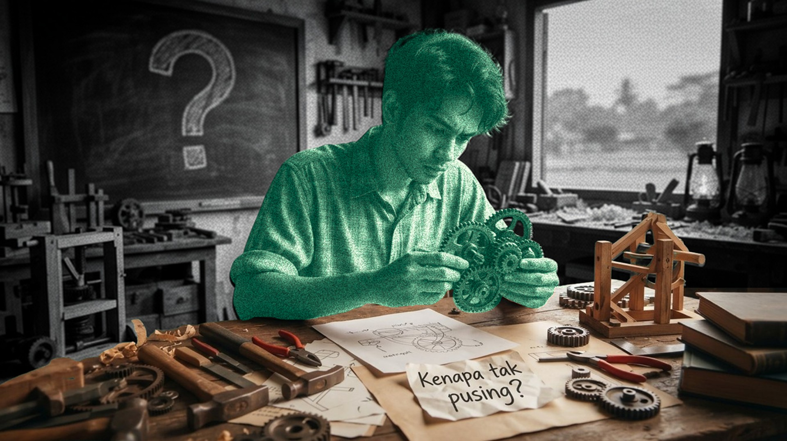
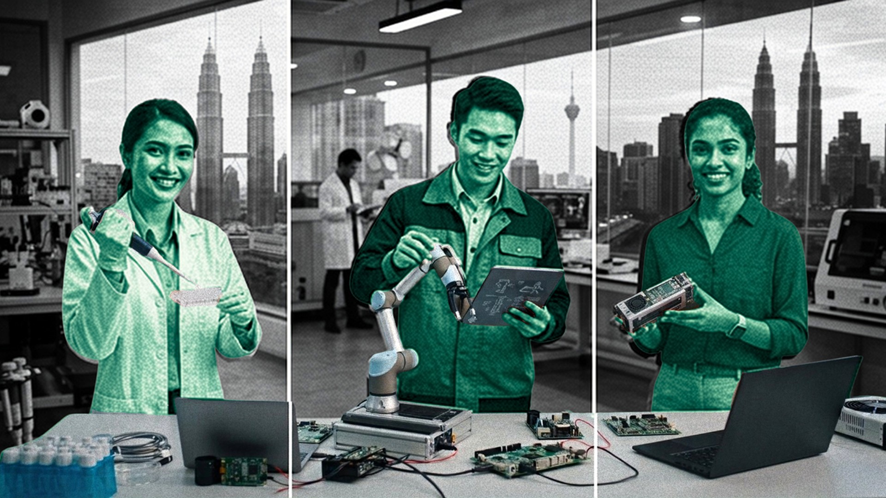
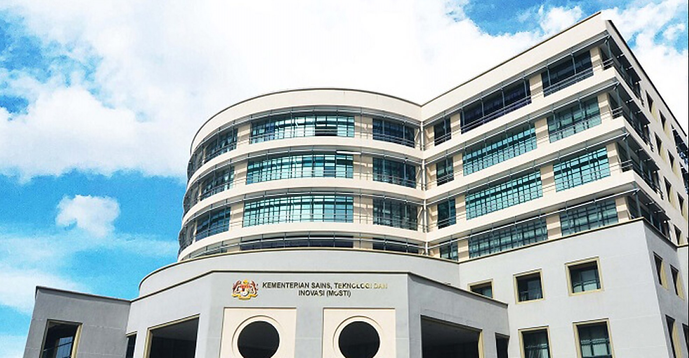
Sebelum ada teknologi, biasanya ada satu perkara dulu: Rasa ingin tahu. “Macam mana benda ini berfungsi?” “Boleh tak kita buat dengan cara yang lebih baik?”
Soalan-soalan kecil seperti ini boleh menjadi titik mula kepada seorang saintis, jurutera atau pencipta teknologi.
Sebab itu, membina keupayaan teknologi sesebuah negara bukan hanya tentang menghasilkan teknologi baharu. Ia bermula dengan memberi ruang kepada manusia untuk bertanya, mencuba dan meneroka.
MOSTI memainkan peranan dalam membina ekosistem yang membantu rasa ingin tahu ini berkembang daripada pendidikan STEM, program advokasi teknologi sehinggalah peluang untuk golongan muda mencuba sendiri.
Techlympics with text
summary (Video 2)
Sebelum ada teknologi, biasanya ada satu perkara dulu: Rasa ingin tahu. “Macam mana benda ini berfungsi?” “Boleh tak kita buat dengan cara yang lebih baik?”
Soalan-soalan kecil seperti ini boleh menjadi titik mula kepada seorang saintis, jurutera atau pencipta teknologi.
Sebab itu, membina keupayaan teknologi sesebuah negara bukan hanya tentang menghasilkan teknologi baharu. Ia bermula dengan memberi ruang kepada manusia untuk bertanya, mencuba dan meneroka.
MOSTI memainkan peranan dalam membina ekosistem yang membantu rasa ingin tahu ini berkembang daripada pendidikan STEM, program advokasi teknologi sehinggalah peluang untuk golongan muda mencuba sendiri.
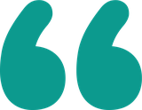
Sebab itu kita mahu masyarakat khususnya generasi muda memahami teknologi nuklear berdasarkan fakta dan ilmu pengetahuan supaya persepsi kurang tepat dapat dibetulkan.
MOSTI merancang memperluaskan Nuclear Advocacy Programme ke peringkat sekolah rendah, melalui kerjasama dengan Kementerian Pendidikan Malaysia. Bukan untuk menjadikan mereka pakar nuklear hari ini. Tetapi untuk membina kefahaman tentang bagaimana teknologi nuklear digunakan dalam bidang seperti kesihatan, pertanian, industri, tenaga dan alam sekitar dan mula melihat STEM sebagai sesuatu yang boleh mereka ceburi.
Insert Voxpop Ibubapa/Pelajar pendapat mereka mengenai Program Advokasi Nuklear
Daripada robotik dan dron kepada teknologi nuklear, asasnya tetap sama: Beri ruang untuk bertanya.
Beri peluang untuk mencuba. Biarkan rasa ingin tahu berkembang. Kerana sebelum kita bina teknologi, kita perlu bina manusia yang mampu membangunkannya.
Semakin kompleks sesuatu teknologi, semakin khusus kepakaran yang diperlukan. Ada teknologi yang boleh dibangunkan dalam tempoh yang singkat.
Tetapi ada juga teknologi yang memerlukan penyelidikan mendalam, infrastruktur khusus dan kepakaran yang dibina bertahun-tahun. Teknologi nuklear ialah salah satu contoh.
Jawapan: Semua di atas.
Teknologi yang kompleks jarang dibangunkan oleh satu bidang sahaja.
Ia memerlukan gabungan ilmu, kemahiran dan kepakaran yang berbeza.
Membina bakat bukan sekadar mencari siapa yang berbakat hari ini. Persoalannya juga: siapa yang akan menjadi pakar 10 atau 20 tahun dari sekarang?
Jika Malaysia mahu membangunkan teknologi kompleks untuk jangka panjang, kepakaran itu perlu dibina, dipelihara dan diwariskan kepada generasi seterusnya.
Satu penemuan hanya benar-benar memberi kesan apabila ia berjaya keluar dari makmal dan menyelesaikan masalah sebenar.
Kerja penyelidik tidak tamat apabila eksperimen berjaya. Sebenarnya, itu baru permulaan. Teknologi perlu diuji dalam keadaan sebenar.
Kemudian disesuaikan dengan keperluan industri. Dan akhirnya, digunakan oleh manusia.
MAKMAL → PROTOTAIP → UJIAN → INDUSTRI → PASARAN → PENGGUNA
Di sinilah satu cabaran besar muncul: Bagaimana kita membawa hasil R&D dari makmal kepada dunia sebenar.
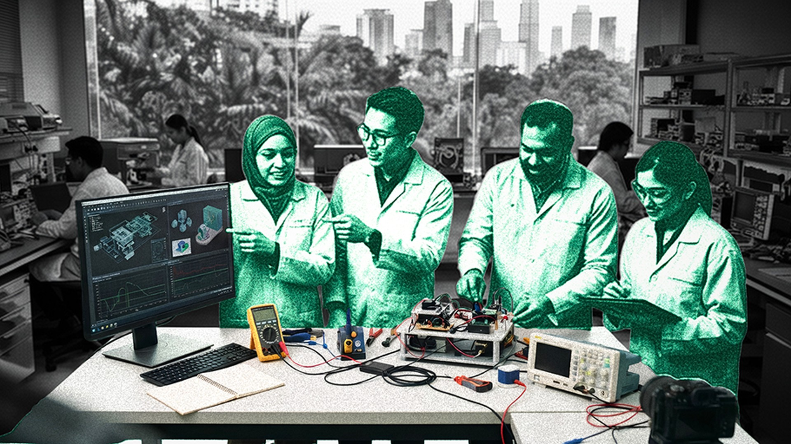
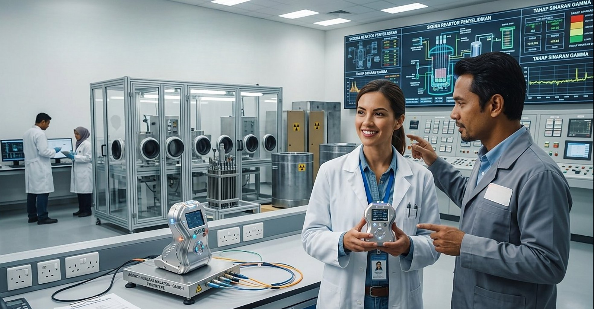
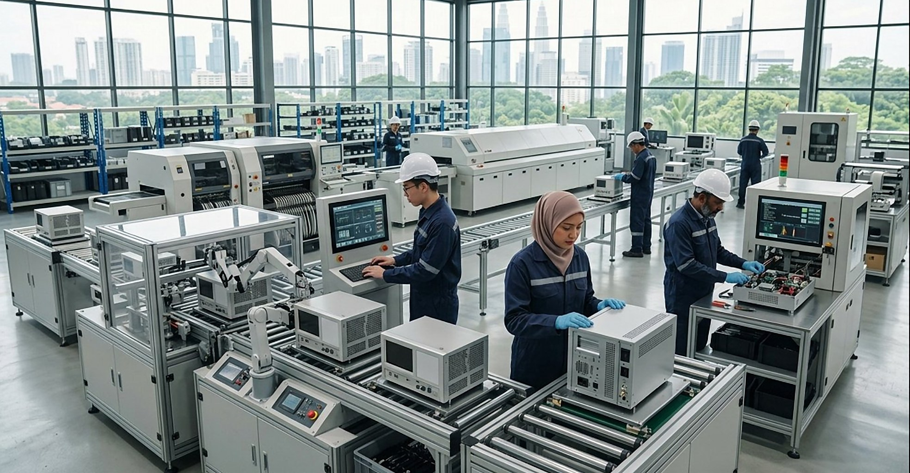
Teknologi tempatan tak boleh terus lompat ke pasaran.
Dana Uji Beli (DUB) membantu syarikat menguji produk dalam keadaan sebenar melalui bukti konsep dan ujian lapangan di kementerian atau agensi kerajaan.
R&D → PROTOTAIP → UJIAN SEBENAR
Setakat September 2025: 42 projek DUB melibatkan 33 produk MySTI daripada 28 syarikat tempatan RM4.7 JUTA peruntukan diluluskan
Produk sudah diuji. Produk terbukti berfungsi. Kini, cabarannya ialah: Boleh tak produk ini dihasilkan pada skala Yang lebih besar?
Dana Mudahcara (DMM) membantu syarikat menampung kos pengeluaran selepas menerima tawaran, pesanan belian atau kontrak kerajaan.
Dan hasilnya? Daripada 9 projek yang telah selesai menjalani pengujian, satu produk berjaya memperoleh RM1.6 JUTA perolehan kerajaan. Daripada teknologi yang diuji, kepada produk yang benar-benar digunakan.
Beberapa produk lain pula masih dalam perbincangan dengan kementerian berkaitan.
Satu penemuan boleh bermula sebagai kajian. Kemudian menjadi prototaip.
Tetapi seseorang masih perlu membawanya keluar dari makmal dan menjadikannya penyelesaian yang boleh digunakan oleh doktor, petani, kilang, perniagaan atau pengguna.
Di sinilah syarikat pemula boleh memainkan peranan. Menyokong startup teknologi bukan sekadar membantu satu syarikat berkembang.
Ia membantu memastikan idea dan hasil penyelidikan terus bergerak dalam ekosistem inovasi.
Tetapi startup bukan penghujung perjalanan. Kalau kita mahu membina keupayaan teknologi negara, teknologi itu akhirnya perlu berkembang menjadi keupayaan industri.
Tetapi startup bukan penghujung perjalanan. Kalau kita mahu membina keupayaan teknologi negara, teknologi itu akhirnya perlu berkembang menjadi keupayaan industri. Lihat sahaja kepada semikonduktor. Cip digunakan dalam tuniversitinderaan, peralatan perubatan dan pelbagai sistem industri. Malaysia sudah lama menjadi pemain penting dalam pemasangan dan pengujian cip.
Kini, kita perlu bergerak lebih jauh dalam rantaian nilai dengan membina keupayaan dalam teknologi yang lebih kompleks, termasuk advanced packaging seperti HBM4 — teknologi pembungkusan memori berprestasi tinggi yang digunakan dalam AI dan komputer berprestasi tinggi.
Sasarannya bukan sekadar membangunkan teknologi, tetapi meningkatkan tahap kesediaan teknologi daripada TRL 5 kepada TRL 9, dengan kerjasama lima syarikat tempatan bersama universiti dan institusi penyelidikan.
Lihat sahaja kepada semikonduktor. Cip digunakan dalam telefon, kenderaan, peralatan perubatan dan pelbagai sistem industri. Malaysia sudah lama menjadi pemain penting dalam pemasangan dan pengujian cip.
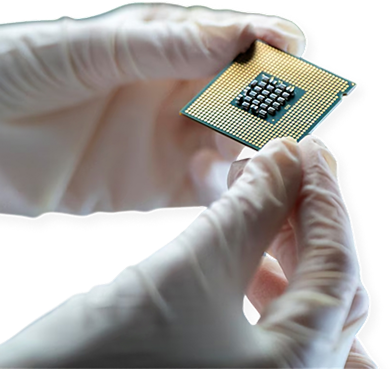
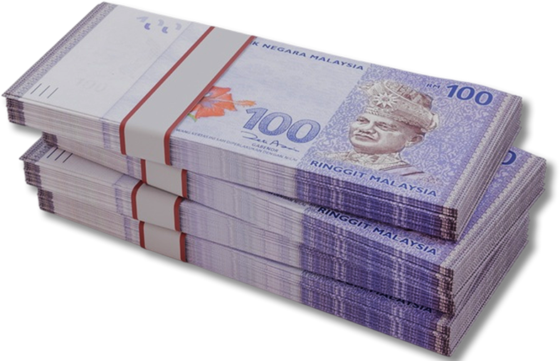
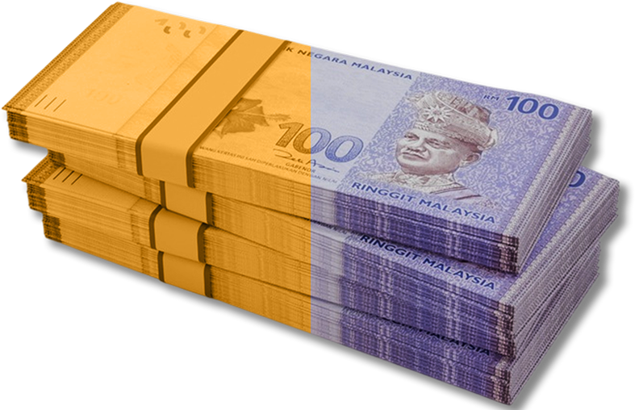
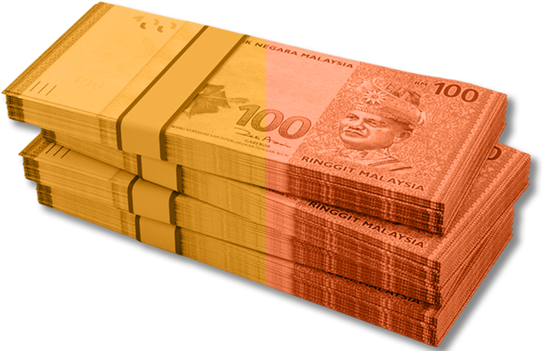
Malaysia sudah lama menjadi pemain penting dalam pemasangan dan pengujian cip.
RM185.8 JUTA jumlah nilai dana disalurkan kepada Malaysia Advanced Packaging Consortium (MAPC), yang terdiri daripada lima syarikat tempatan, bagi tempoh 24 bulan.
RM92 juta
Geran R&D melalui Malaysia Science Endowment (MSE)
RM93.8 juta
Padanan industri
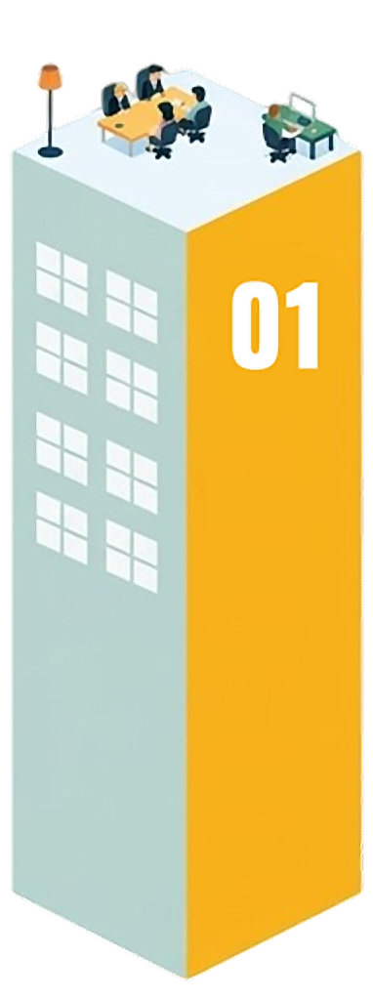
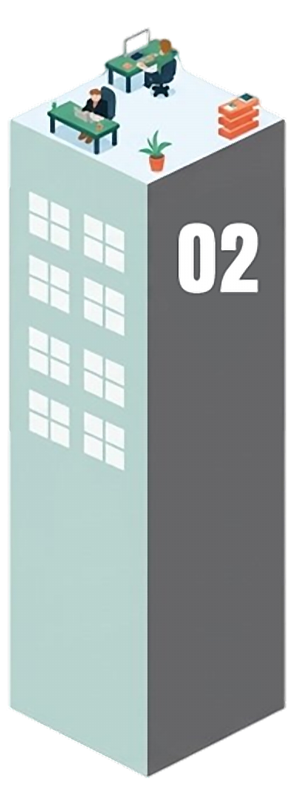
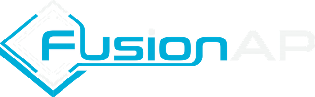
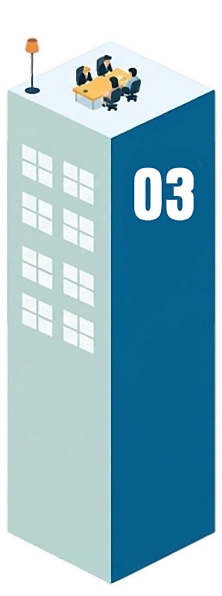
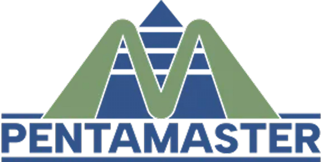
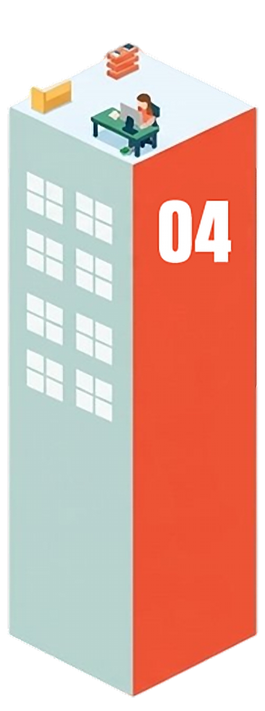
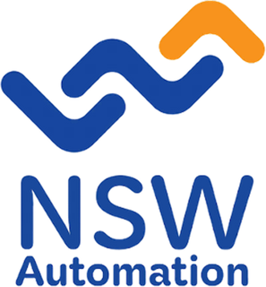
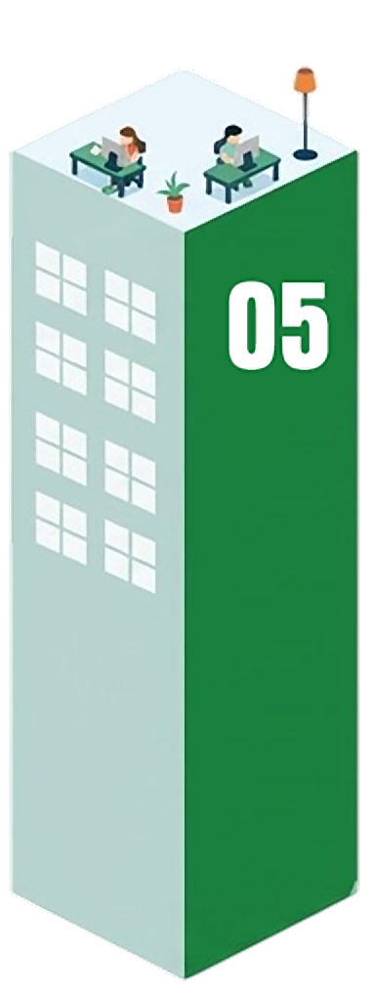
5 syarikat, 5 kepakaran
SkyeChip Berhad
Reka bentuk cip
Inari Technology Sdn Bhd
Pemasangan & pengujian semikonduktor
FusionAP Sdn Bhd
Teknologi pembungkusan termaju
Pentamaster Instrumentation Sdn Bhd
Automasi & peralatan ujian
NSW Automation Sdn Bhd
Automasi & peralatan ujian
Kita boleh bercakap tentang cip, AI, nuklear, robotik dan teknologi canggih. Tetapi akhirnya, teknologi bukan wujud untuk teknologi itu sendiri. Ia perlu menyelesaikan masalah, membantu industri, meningkatkan keupayaan negara, dan memberi manfaat kepada masyarakat.
Malaysia bina teknologi untuk seret ke sini
Seret pilihan anda ke ruang kosong, atau tekan sahaja.
Apa pun pilihan anda, kita kembali
kepada soalan yang sama:
Kalau teknologi itu belum wujud, siapa yang akan membinanya? Dan mampukah Malaysia menjadi salah satu negara yang mampu membinanya?
Membina teknologi bukan sekadar tentang menghasilkan satu produk atau satu ciptaan. Ia tentang membina keupayaan.
Keupayaan untuk memahami. Mencipta. Menguji. Menggunakan. Dan akhirnya, menentukan teknologi yang sesuai untuk masa depan negara.
Daripada seorang pelajar yang bertanya soalan, kepada seorang penyelidik yang mencari jawapan, kepada startup yang membina penyelesaian, kepada industri yang mengembangkannya.
Semua ini membentuk satu ekosistem. Dan ekosistem inilah yang menentukan sejauh mana kita mampu membina sendiri.
Kita mungkin tidak mampu membangunkan semuanya. Tetapi kita perlu tahu: apa yang kita perlukan? Apa yang kita mampu bangunkan? Dan bila kita perlu membina keupayaan sendiri?
Mungkin bukan semuanya. Tetapi kita boleh membina sesuatu yang lebih penting keupayaan untuk membangunkannya.
Melalui ekosistem sains, teknologi dan inovasi yang lebih kukuh, Malaysia perlu memastikan kita mempunyai bakat, kepakaran, penyelidikan dan sokongan yang diperlukan untuk mencipta dan membangunkan teknologi sendiri.
Dan di sinilah MOSTI memainkan peranan memperkukuh ekosistem Sains, Teknologi dan Inovasi supaya Malaysia bukan sekadar menjadi pengguna teknologi, tetapi turut mempunyai keupayaan untuk mencipta, membangunkan dan memiliki teknologi masa depan.
Insert Video:
Summary of MOSTI
(Video 4)